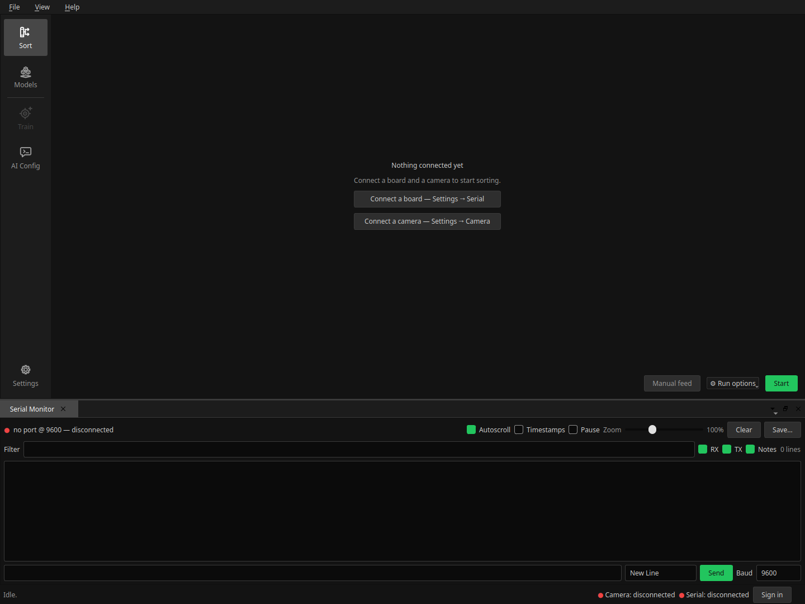

Getting Started¶
From a freshly installed app to your first sorted case. Each step links into the User Guide, which is the reference for the screen once you know why you're on it.
What you see first¶

The window is the same on every screen: activity buttons down the left, your working screen in the middle, movable panels around it, a menu bar on top, and a status bar underneath carrying the camera and serial indicators and the sign-in.
The app opens on the Sort dashboard — where sorting eventually happens. On a fresh machine nothing is connected and nothing is routed to a slot yet, so it shows a short setup panel with buttons straight to the two settings pages you need first, rather than an empty slot grid.
Nothing here needs an account. Signing in is only for the Community screen.
1. Connect the sorter¶
Settings → Serial. Pick the port the board is on and press Connect. The status bar's ● Serial indicator turns green and names the port, speed and the firmware version it handshook with.
If no port appears, the board is probably not the problem — see Troubleshooting.
No hardware yet? Pick the Emulated port. The built-in emulator speaks the real board's protocol, so every screen, every setting and the whole run loop work; only brass doesn't move. It is the right way to explore the app before the machine is built.
The same page holds the board init settings — feed and sort speeds, homing offsets, motor current, the camera LED. Those belong to the machine, and the sorter's own build documentation is what tells you what to put in them. Tick Initialize these settings on startup once they're right, and the app pushes them on every connect.
2. Pick the camera¶
Settings → Camera. Press Detect / refresh, choose the camera and a resolution, then Apply. The preview underneath updates immediately, so a wrong pick is obvious before you leave the page.
Nothing grabs the camera on its own — both actions are yours.
3. Tune the crop¶
Settings → Image Processing. The classifier never sees the raw frame: every case is cropped to a 480×480 image of the headstamp first, and a model recognises brass that looks like what it was trained on.
Press Capture to grab one frame and tune against it — every change re-processes that same frame, so you are not feeding a case per adjustment. Start with the minimum and maximum case radius: they bracket the size of the case in the frame, and most bad crops are one of those two being wrong.
These settings belong to the active model, not to the app, because case diameter and primer size are properties of the cartridge. Switching models brings its own values back.
4. Choose how cases get classified¶
This is the one real decision, and the Models screen is where you make it. Exactly one row there is ● ACTIVE, and that row alone decides how classification happens.
A fresh install starts in AI Config mode with an empty starter model ("Default", 9mm) sitting in the library, unused. Three ways forward:
| Route | Do this | Needs |
|---|---|---|
| Someone else's model | Community → pick one → Download model, then Activate it on Models. | An account; PyTorch (offered when needed) |
| Your own model | Models → New model, activate it, then Train: feed, label, save, repeat — and train when you have enough images. | PyTorch (offered when needed) |
| An HTTP server | Leave "Use AI Config" active and fill in the server on AI Config. | An OpenAI-compatible endpoint |
The Train and AI Config buttons in the sidebar follow that choice — one is live, the other dimmed, and a dimmed one still opens a page explaining which mode you're in. A community model dims both: its publisher trained it.
If you already have a model from the Windows app, Import… on the Models screen reads its ZIP directly.
PyTorch is installed on demand. Training and local inference need it. The app offers to install it the first time you do something that requires it, and never before — see PyTorch.
5. Route headstamps to slots¶
Back on the Sort dashboard, each slot on the machine is a card. Click one and tick the headstamps that should land in it.
- Slot 0 is the Catch-All and can't be edited. Everything unrouted, unrecognised, or below the confidence floor goes there.
- A headstamp belongs to one slot at a time (outside package mode).
- Your layout is saved as you make it, under the template named in the grid's header — there is no "save" step. Make a second template when you want a second arrangement.
⚙ Run options is worth one look before the first run: the confidence floor is the percentage a prediction must reach to be trusted, and Automatically select trays routes a confident headstamp with no slot to the first empty one.
6. Sort¶
Manual feed runs a single cycle — feed, capture, classify, sort. Use it a few times first: it shows the crop, the label and the confidence for one case, which is where a bad crop or a mismatched model shows up cheaply.
Start then runs the loop continuously and turns into a red Stop. Case counts survive a stop, so you can clear a jam and pick up mid-tray.
If Start is greyed out or refuses, it says why: no board connected, no API key or model name in AI Config mode, a missing checkpoint, PyTorch not installed yet, or an unread moderator note.
Watch the run in the Classification History panel (View menu) — one tile per case, with the crop, the headstamp, the confidence and the bin it went to.
Where to go next¶
- The User Guide — every screen and control in detail.
It is also in the app:
F1opens it at the section for the screen you're on. - Troubleshooting — when the camera is black, the board isn't found, or everything lands in the Catch-All.
- Help → Export support package… collects your configuration into a shareable report when you need to ask someone.